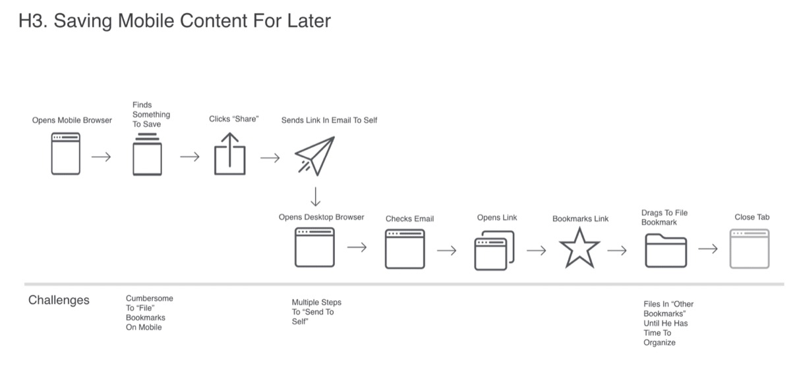

In Praise of Theory in Design Research: How Levi-Strauss Redefined Workflow
By BILL SELMAN and GEMMA PETRIE, Mozilla. This blog post originally appeared on the EPIC Perspectives blog.
In his 2015 novel, Satin Island, Tom McCarthy’s protagonist (known only as “U”) is a corporate anthropologist working for an outre design research firm whose work embodies all the absurd contradictions of late capitalism. The highly influential firm’s logo is “a giant, crumbling tower.” The visionary owner and boss of U takes pride in telling his clients that he is selling them “fiction” and in talks to Davos-like conferences speaks primarily in Nietzschean aphorisms. Ultimately, McCarthy portrays the role of his protagonist and design researcher as the ideal specimen of the late capitalist job.
In one scene, U describes a tactic he used to provide insight for analysis to a well-known client who manufactures jeans:
...to provide a framework for explaining to the client what these crease-types truly and profoundly meant – I stole a concept from the French philosopher Deleuze: for him le pli, or fold, describes the way we swallow the exterior world, invert it, and then flip it back outwards again, and, in so doing, form our own identity. I took out all the revolutionary shit (Deleuze was a leftie); and I didn’t credit Deleuze, either. Big retail companies don’t want to hear about such characters. [1]
It’s true, they don’t: Despite the radical rhetoric of “making the world a better place” and “moonshots” portrayed in the press (and on satires such as the series Silicon Valley), the technology industry (and more specifically software engineering) that we know and work in is as conservative as the clients of U. For as long as we have been in practice over the last decade, there has been a wall between industry and matters perceived as “academic” (that is, social theory based knowledge). We have been told that things “academic” are unempirical, vague, and impractical. We’ve had managers who said that even if there is a social theory that informs an interpretation or research finding, like U, we should expunge all references to it in internal discussions. There are safe spaces for the merger of these two institutions, such as conferences, journals, and blogs. But in everyday practice, the language and work we conduct is practically oriented and meets the positivist assumptions of the software engineering world. [2] References to academic, empirical HCI research is acceptable in software development, but we would never mention a rationalist, 20th century theorist outside our own intra-departmental discussions.
Except for the time when it made perfect sense to do just that.
In early 2016, our user research team was asked to conduct an international, mixed methods research study into users’ web browser workflows both on mobile and desktop. Over the course of a year, we employed experience sampling, in-home interviews, and surveys to understand how users completed fundamental tasks online, such as navigation, checking email, buying tickets to events, checking the weather, following sports scores, or banking.
We gathered a great deal of data on the motivations, beliefs, and behaviors behind our participants’ workflows. But as we sought to build an overarching framework to serve as a foundational explanation, we learned that many participants’ workflows were not as straightforward, deterministic, and reducible as we anticipated.
It is now well known that people use technology in unexpected ways (at least, in ways that software engineering and product teams had not intended). In our study, we observed:
Our participants generally used the tools at hand with which they were already familiar. Although there are services such as Evernote or Google Keep specifically designed to save, organize, and recover data such as recipes, most of our participants were unaware of these services or did not choose to work with them. Instead, they used the tools they were already intimately familiar with like email, MS Word documents, or screenshots.
For multi-device workflows, most participants we studied in all six countries used tools like email and messaging apps as a kind of cloud storage and information retrieval system to share screenshots or photos of computer screens across devices. Then, they would access these files on another device when they wished to remember items they liked and wanted to purchase, such as clothing or electronics.
Services such as Instapaper or Pocket are designed to help technology users save articles they wish to read later. Instead, many participants accomplished this goal by keeping tabs in the browsers open or using Google search to help them recover news articles they wanted to recall.

Diagram depicting the workflow steps taken by a participant in Hamburg, Germany to save mobile web content for later.
It was clear that our research participants were not using and not seeking out specialized tools tailored to accomplish their specific goals. Why? When we went into analysis, a tension appeared between our findings and what we believed was being asked of us to report on. Our original charge was to find ways to improve and optimize users’ browser workflows following software and design-oriented assumptions. Instead, we saw that users were doing just fine with the tools they were already using.
In fact, it was a challenge to get participants to explain their workflows at all. To many of them, their workflows appeared to be completely obvious and natural. Reconstructing a narrative for these tasks and understanding them in context from the participant’s perspective required some effort. Thinking back on this, it was evident to us that there was nothing to “improve” or “optimize” here as a standardized “workflow.” The participants’ solutions were already clever optimizations using the tools and paths that they understood.
Drawing on our academic backgrounds, we realized what we were seeing. Our participants were bricoleurs in the sense that Levi-Strauss described in The Savage Mind. We want to quote from Levi-Strauss in full because he describes perfectly not only the phenomenon we were seeing but also the problem space of the distance between our participants’ mental models and the software engineering-based assumptions.
The ‘bricoleur’ is adept at performing a large number of diverse tasks; but, unlike the engineer, he does not subordinate each of them to the availability of raw materials and tools conceived and procured for the purpose of the project. His universe of instruments is closed and the rules of the game always to make do with ‘whatever is at hand’, that is to say with a set of tools and materials which always finite and is also heterogeneous because what it contains bears no relation to the current project, or indeed any particular project, but is the contingent result of all the occasions there have been to renew or enrich the stock or to maintain it with the remains of previous constructions or destructions. [3]
Levi-Strauss tells us here that bricolage is both the bricoleur’s mental model and her workflow. Likewise, our participants are taking the simple tools at hand and combining them together to construct a solution; bricolage is our participants’ workflow.
Further, Levi-Strauss exposes how our assumptions about building improved workflows is an engineering-based mindset. The word “workflows” itself implies an explicitly engineered system to solve a problem optimally using the ideal “raw materials and tools conceived and procured for the purpose of the project.” Real web browser users in the world do not think or act in this way. To build a programmatic, engineered workflow is to ask our users to understand and embrace an engineering mindset–which is contrary to their understanding and practice. [4]
In a move that would be have been highly discouraged in the past, we believed it was essential to ground the description from our research in Levi-Strauss’ theory. We included several slides on the topic in our presentation to our product team, as well as the full quote from Levi-Strauss above. Unlike U in Satin Island, we also included a full citation to Levi-Strauss.
The bricolage slides turned out to be the most provocative source of discussion from our entire presentation. As a team, we unpacked the differences between the bricoleur’s mindset and the engineer’s mindset. The discussion provided us a way to tear down our assumptions and see how an engineered approach as a formal “workflow” to any task was ultimately not the design path to follow.
Through these discussions, we defined a workflow as “a habitual, frequently-employed set of discrete steps that users build into a larger activity.” As a set of design principles, this means: give users simple, atomic tools they can understand independently and also provide them with affordances to combine together. More important, do not be prescriptive about how users should construct their browser-based workflows. In the end, an “academic” theorist had a strong role in shaping a software product engineering team’s definitions as well as its design principles and approach.
There are two primary reasons that we believe presenting theory worked for us in this instance. First, before we presented Levi-Strauss’s insights, we took U’s approach: our presentation focused on our observations without discussing their theoretical underpinnings. Our definition of workflows was presented as a set of empirical observations and analyses based on our fieldwork. After this description of our research, we presented Levi-Strauss’s quote in full. We believe ordering our narrative in this way made our team more receptive to Levi-Strauss’s theory as an additional explanation, rather than the primary explanation for our research findings.
Second, Levi-Strauss’s theory of bricolage is clearly relatable to our audience and our team was able to recognize parts of their experience in the description. In this case, Levi-Strauss’s comparison between the bricoleur and the engineer provides insight not only into our observations but also into how our engineering team thinks about the problem space in general. Using theory to support our research findings allowed the team to gain a greater sense of self-awareness into their assumptions and how others without those assumptions might think and behave differently.
Notes
1 McCarthy, Tom. Satin Island. Knopf, 2015.
2 Cf. the preface in Dourish, Paul. Where the action is: the foundations of embodied interaction. MIT press, 2004. “Computer science in practice involves reducing high-level behaviors, formalizing them through pure scientific rationality; in this computer science, reveals its history as part of a positivist, reductionist tradition.”
3 Levi-Strauss, Claude. The savage mind. University of Chicago Press, 1966.
4 Thinking about this distance between the bricoleur and the engineer, software wizards are the most obvious example. Chunking complex processes into a workflow is the most obvious engineering-based solution to a bricoleur’s mindset. Wizards are also viewed generally now with some disdain as a design pattern as they don’t fit most users’ mental model. Microsoft has largely removed them from their Office software.